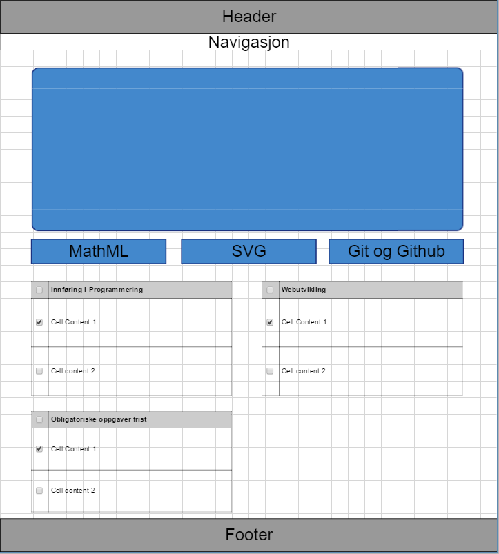
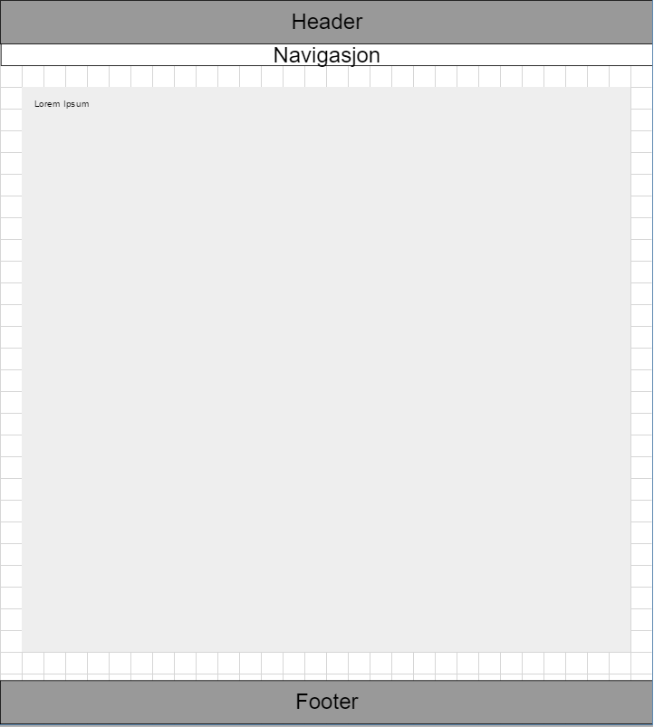

Om denne siden


Når man går inn på forsiden av nettsiden så vil jeg at folk skal kunne se hvor de skal gå.
Knappene under bildet skal føre rett til oppgavene og skal være lett å se. Og Jeg har to tables på forsiden for å vise
Forelesningene jeg har i uken. Og den andre table er for å vise fristene til obligene som er iløpet av semesteret.
Artikkelsiden er så plain
som den kan bli.
| Beskrivelse | URL |
|---|---|
| Jeg fant en nettside som har forskjellige templates. Jeg gikk over mange forskjellige templates som ga meg noen ideer om hva jeg kunne gjøre for min nettside. | Smartdraw |